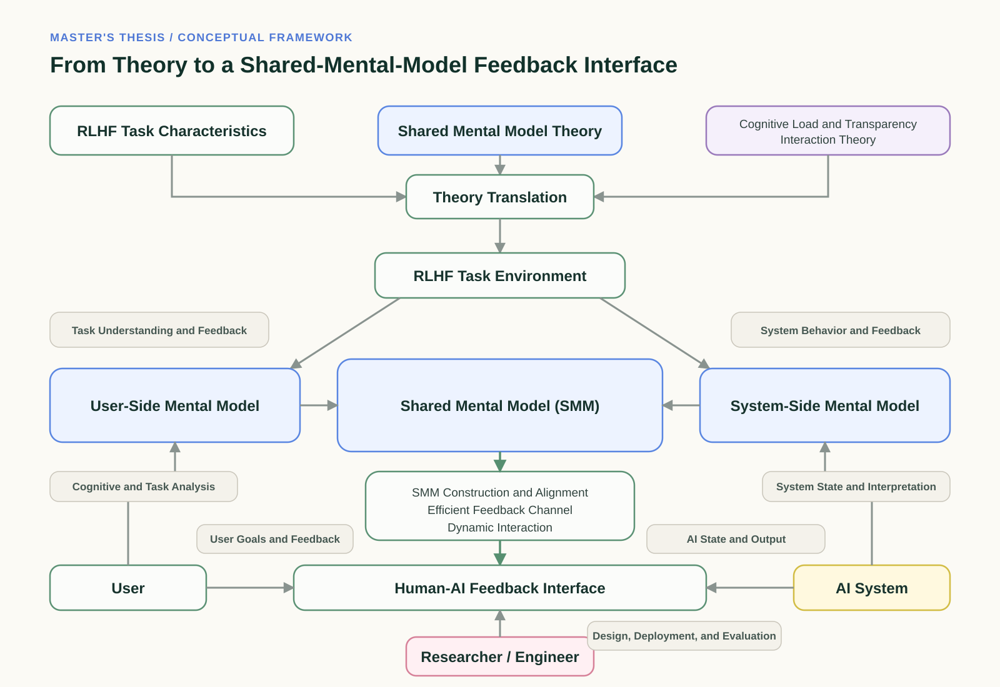

Education
Southeast University
M.Eng. in Design, School of Mechanical Engineering
Human-AI interaction, ergonomics, and experimental designChongqing University
B.S. in Industrial Design
Interaction design, design psychology, and product innovationPHD APPLICATION PORTFOLIO
My background in industrial design, human factors, and interface evaluation has led me toward Human-AI Interaction and feedback interface research.
Large-screen interface research was my starting point. I then explored shared mental models, designed and evaluated feedback interfaces, and extended the work to feedback data and model outputs. Together, these stages form one evolving master's research journey.

Each case records the context, my role, the methods used, and what I learned from the work.
More research and projects
Education, publications, research methods, professional experience, and recognition relevant to my PhD application.
M.Eng. in Design, School of Mechanical Engineering
Human-AI interaction, ergonomics, and experimental designB.S. in Industrial Design
Interaction design, design psychology, and product innovationShared mental models as cognitive scaffolds: Optimizing interface design for human-in-the-loop alignment tasks.
International Journal of Industrial Ergonomics, 114, 103955. First author. DOI ↗
Research on the Multi-Chart Layout Design of Large-Screen Interface: A Perspective on Cognitive Load.
HCII 2025, LNCS 15766, 31-46. First author. DOI ↗
Designing Corrective Feedback: How Interface Structure Shapes User Review, Training Data, and Model Outputs.
Manuscript submitted to ACM TOCHI, August 2026. First author.
Interface Design and Interaction Optimization for Reinforcement Learning from Human Feedback.
Master's thesis, Southeast University. Completed May 2026.
ResearchUsability testing, controlled experiments, eye tracking, mixed methods, statistical analysis
ProductRequirements analysis, workflow modeling, product specifications, prototype validation, UAT
ToolsPython, C#, Unity, SPSS, Figma, Pixso, Photoshop, SolidWorks, CATIA, Tobii
AILLM adaptation, LoRA fine-tuning, feedback dataset construction and audit
IELTSOverall 6.5; all components 6.0 or above
IT Product Management Trainee
Translate user-research workflows into product requirements and coordinate clarification, validation, UAT, and cross-functional delivery. Internal interfaces are not displayed.Modeling and Drafting Technician
Produced and reviewed approximately 300 A0 mechanical drawings and parametric models.Interaction Designer
Translated user needs into high-fidelity prototypes and coordinated implementation.Head of the Chongqing University Archives Docent Team; Vice Captain of the Mechanical and Vehicle Engineering Debate Team; Graduate Union member; Grade Assistant; volunteer leader.
Outside workClimbing, cooking, debate, and docent work.